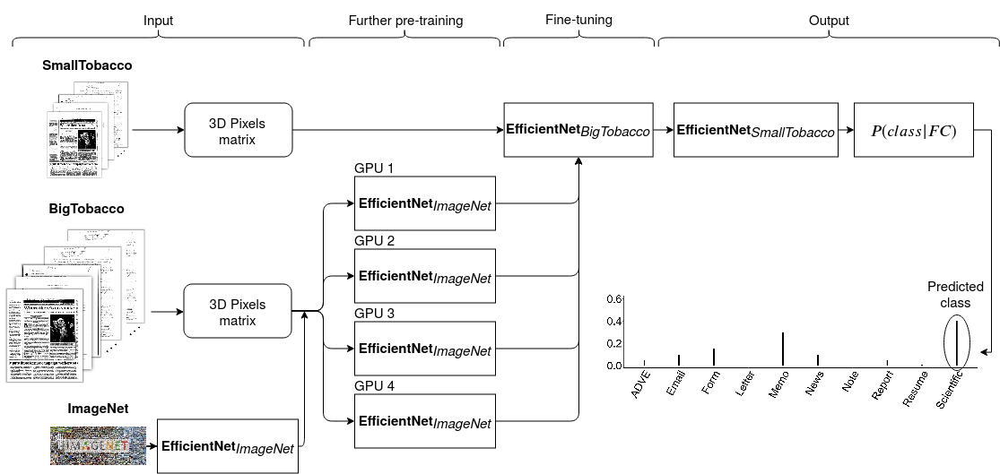
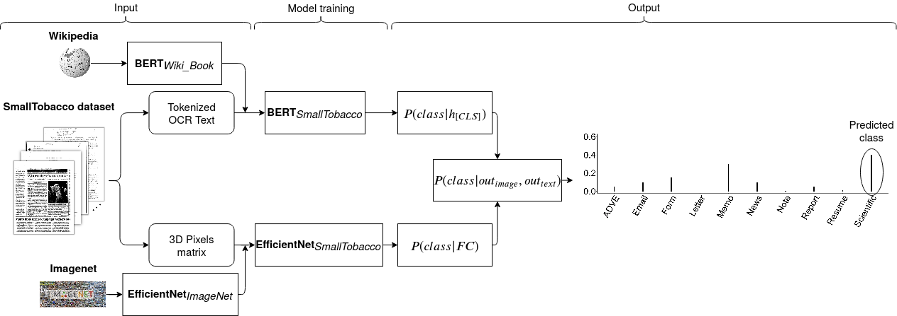
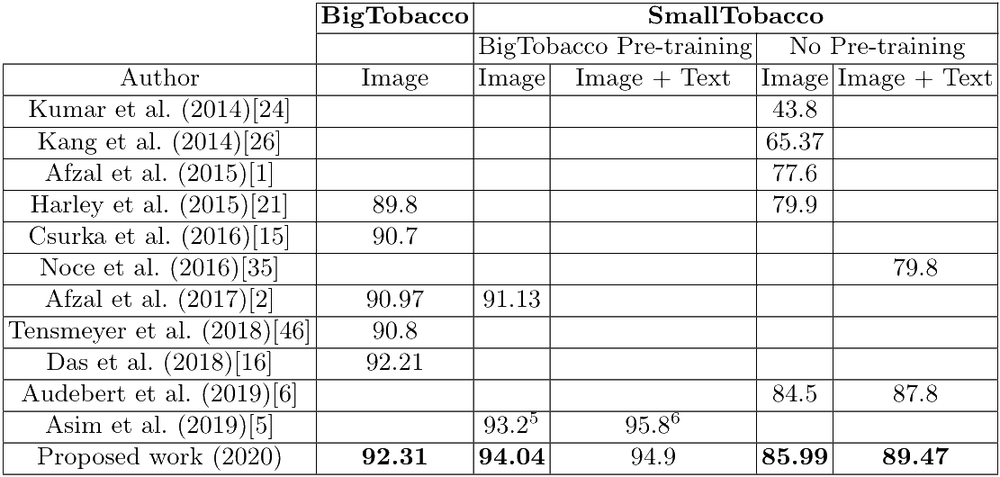
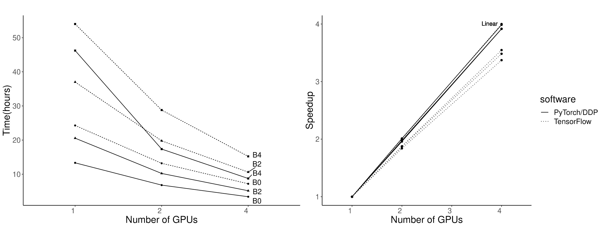

Improving accuracy and speeding up Document Image Classication through parallel systems
This paper presents a study showing the benefits of the EfficientNet models compared with heavier Convolutional Neural Networks (CNNs) in the Document Classification task.
We show in the RVL-CDIP dataset that we can improve previous results with a much lighter model and present its transfer learning capabilities on a smaller in-domain dataset such as Tobacco3482. Moreover, we present an ensemble pipeline which is able to boost solely image input by combining image model predictions with the ones generated by BERT model on extracted text by OCR.
We also show that the batch size can be effectively increased without hindering its accuracy so that the training process can be sped up by parallelizing throughout multiple GPUs, decreasing the computational time needed. Lastly, we expose the training performance differences between PyTorch and Tensorflow Deep Learning frameworks.
Paper: Improving accuracy and speeding up Document Image Classification through parallel systems
Model
Parallel pre-training in BigTobacco and fine-tuning in SmallTobacco:

SmallTobacco training/fine-tuning:

results
Results comparison

TensorFlow vs PyTorch distributed training

usage
Image Model Distributed Training
PyTorch
efficientnet_pytorch library downloads the models in .cache/torch/checkpoints. In case your machine has no internet connection, make sure to add the models manually.
1
2
3
4
5
python -m torch.distributed.launch eff_big_training_distributed.py \
-n 1 -g 4 -nr 0 \
--epochs 20 \
--eff_model b0 \
--load_path /gpfs/scratch/bsc31/bsc31275/
-
n: number of nodes -
g: number of gpus in each node -
nr: the rank of the current node within all the nodes -
epochs: training number of epochs -
eff_model: EfficientNet model -
load_path: path where datasets are stored
TensorFlow
efficientnet.tfkeras library downloads the models in .keras/models.
1
python distr_effnet_shear.py --image_model 0 --optimizer sgd --epochs 20
-
image_model: : EfficientNet model -
optimizer: optimizer to be used -
epochs: training number of epochs
Text Model (PyTorch)
pytorch_transformers library downloads the models in .cache/torch/pytorch_transformers. BERT training is simply done by running python main.py. To get the ensemble results run python ensemble.py.
Also see README.md on github!
datasets
Datasets
We provide the scripts to generate the .hdf5 and .TfRecord used here.
Run python ./Data/python BT_hdf5_dataset_creation.py to create the .hdf5 files for train, test and validation sets.
For SmallTobacco, we provide the scripts for both optaining Tesserect OCR .txt files and generating random splits .hdf5 files.
Run:
-
python ./Data/ocr_tobacco.pyto extract OCR and save .txt files in the same path as the images. -
python ./Data/python ST_hdf5_dataset_creation.pyto create the .hdf5 file dataset.
Please contact the repository owner for more information.
citation
If you find this paper useful, consider citing:
@inproceedings{improvingiccs2020,
title={Improving accuracy and speeding up Document Image Classication through parallel systems},
author={Javier Ferrando, Juan Luis Domínguez, Jordi Torres, Raúl García, David García,
Daniel Garrido, Jordi Cortada, Mateo Valero},
booktitle={2020 International Conference on Computational Science (ICCS)},
year={2020},
}